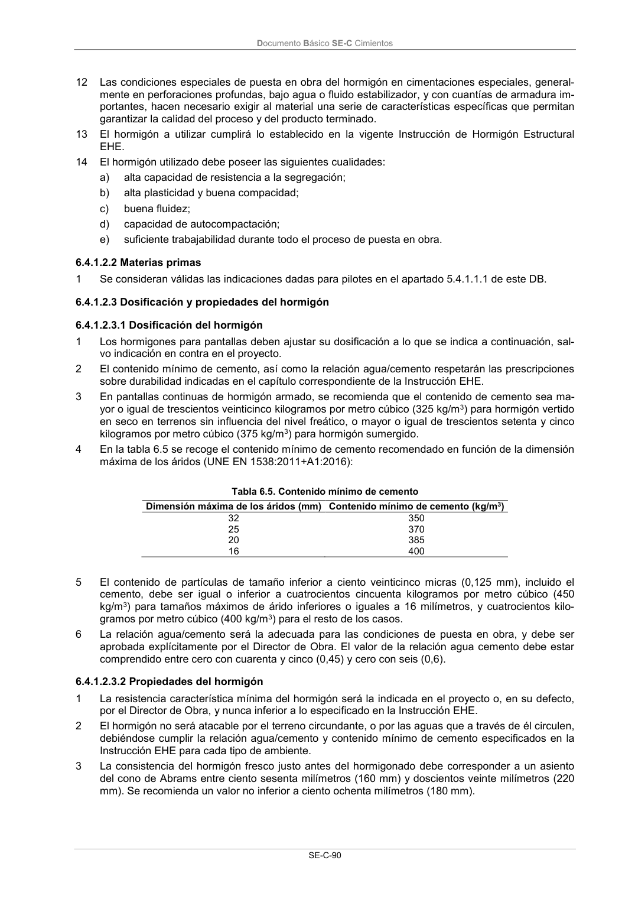

DB-SE-C · 6.4.1.2.2 Materias primas · versión 2019-12-20 · capa oficial
Formatos: JSON compacto · Markdown · PDF fuente
Ámbito del documento · texto del ámbito · documento y tablas
ID técnico a0204 · PDF pág. 95 · jerarquía no validada por persona · contrastado con el literal de la página 95 (candidato tipográfico); no validado por persona · padre: raíz
6.4.1.2.2 Materias primas 1 Se consideran válidas las indicaciones dadas para pilotes en el apartado 5.4.1.1.1 de este DB.

PDF fuente redistribuible: copia fiel enlazada en esta página (SHA256 verificado).